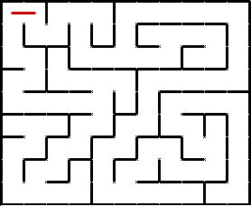
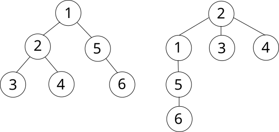
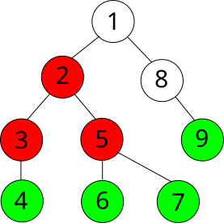

Краткое введение в рекурсию
Возможно, вам уже когда-либо приходилось сталкиваться с рекурсией. Рекурсия - фундаментальное понятие в
информатике, в каком-то смысле настолько же важное, как и циклы.
По определению, рекурсивная функция - функция, которая вызывает сама себя. В математической терминологии
рекурсивная функция определяется через саму себя. Существует множество известных примеров рекурсивных функций,
приведём две самых известных:
● Факториал. По определению, факториал от числа N - произведение всех чисел от 1 до N. Рекурсивно это
записывается так:
Первая формула - крайний случай, определяющий факториал от единицы. Вторая формула - общий случай, определяющий
факториал от любого натурального числа через факториал от предыдущего числа.
●Последовательность чисел Фибоначчи. По определению каждое число этой последовательности - сумма двух
предыдущих. Два первых числа в разных источниках определяются по разному: это могут быть 0 и 1, или 1 и 1. Мы
будем придерживаться второго варианта:
И опять у нас две формулы: для крайнего случая и для общего.
В программировании это записывается так же прозрачно:
1. int fact(int x) {
2. if (x == 1) {
3. return 1;
4. } else {
5. return fact(x - 1) * x;
6. }
7. }
8.
9. int fib(int n) {
10. if (n <= 2) {
11. return 1;
12. } else {
13. return fib(n - 1) + fib(n - 2);
14. }
15.}
(Примечание: хотя числа Фибоначчи - хороший пример рекурсии в математике, в программировании приведённую выше
рекурсивную реализацию ни в коем случае нельзя использовать на практике. Её сложность равна порядка
, что, разумеется, неприемлемо. Более подробно это будет разобрано в лекции про динамическое программирование.)
Существует мнение, что лучший способ понять рекурсию - это понять
рекурсию работа с целесообразными рекурсивными алгоритмами. Поэтому не будем углубляться в детали, а сразу
перейдём к поиску в глубину.
{kind=link}
{kind=link}
Принцип работы обхода в глубину
Обход в глубину, или DFS (англ. depth-first search), в чём-то похож на действия, выполняемые человеком для
прохождения лабиринта (DFS собственно и является алгоритмом для решения лабиринтов). Находясь на очередной
развилке, мы ставим метку, обозначающую, что мы уже здесь были, после чего идём в произвольном ещё не посещённом
направлении. На следующей развилке мы выполняем те же действия, и так пока не попадём на развилку, которая не
открывает нам ни одного нового пути (все уже посещены). В таком случае мы возвращаемся на предыдущую развилку и,
если там ещё остались непосещённые направления, идём туда. Если же оттуда также некуда идти, то мы возвращаемся
назад ещё на одну развилку, и так далее, пока не найдём непосещённое направление.
Иллюстрация прохождения лабиринта с помощью DFS:

Неочевидным моментом может быть выбор конкретного непосещённого направления из нескольких возможных на
очередной развилке. DFS никак этого не определяет. Можно, например, всегда стараться идти вправо вниз, или
наоборот, влево вверх, или вообще выбирать случайное направление. На суть алгоритма это никак не влияет. DFS
выбирает случайный путь, тогда как BFS ищет кратчайший.
В принципе, точно описать алгоритм можно всего лишь одной функцией со следующим псевдокодом:
dfs(v):
visited[v] = true
...обработка вершины v
for v -> u:
if not visited[u]:
dfs(u)
Иллюстрация обхода графа (дерева) с помощью DFS:

Реализация для произвольного графа
Для представления графа используется список смежности:
1. #include <bits/stdc++.h>
2.
3. using namespace std;
4.
5. vector<int> graph[100000];
6. bool used[100000]; //вместо visited массив меток обычно называют used.
7.
8. void dfs(int v) {
9. used[v] = true;
10. cout << "DFS at vertex " << v + 1 << endl;
11.
12. for (int u: graph[v]) {
13. if (!used[u]) {
14. dfs(u);
15. }
16. }
17.}
18.
19.int main() {
20. //Ввод графа...
21.
22. dfs(0); //Начинаем обход с вершины 0.
23.}
Как видите, код получился очень лаконичным: функция DFS уложилась в 10 строк.
Реализация для дерева
Очень часто DFS применяется не для произвольного графа, а для дерева. Это позволяет реализовать алгоритм немного
по другому: засчёт отсутствия в дереве циклов мы можем избавиться от массива used. Достаточно всего лишь
передавать в функцию ещё один параметр: предыдущую вершину. Этот параметр необходим, чтобы не попасть в
бесконечный цикл из двух вершин (постоянно проходя по одному и тому же ребру).
Реализация:
1.#include <bits/stdc++.h>
2.
3.using namespace std;
4.
5.vector<int> graph[100000]; //храним дерево как и обычный граф
6.
7.void dfs(int v, int p = -1) { //p (от parent) - предыдущая вершина, для начальной вершины равна -1.
8. cout << "DFS at vertex " << v + 1 << endl;
9.
10. for (int u: graph[v]) {
11. if (u != p) {
12. dfs(u, v);
13. }
14. }
15.}
16.
17.int main() {
18. //Ввод графа...
19.
20. dfs(0); //Начинаем обход с вершины 0.
21.}
С обходом деревьев связана некоторая дополнительная терминология. Вершину, с которой начинается обход называют
корнем. Иногда в задачах корень дерева явно обозначен, а иногда его нужно выбирать самостоятельно (чаще
всего эту роль выполняет первая вершина). Начав обход дерева с другой вершины (другого корня), мы получим другой
порядок обхода вершин. Для обозначения такого действия есть свой термин: подвешивание дерева за
определённую вершину.

Изображено одно и то же дерево, подвешенное за разные вершины: 1 и 2 соответственно. Чаще всего деревья
изображаются в таком виде: корень сверху, все остальные вершины вертикально разделены по уровням. Считается, что
BFS “спускается” по дереву сверху вниз.
Все вершины, в которые мы можем попасть из определённой вершины, спускаясь “вниз” с помощью DFS,
называются её поддеревом. Вершины, из которых мы больше не можем никуда “спуститься” называются листьями.

На иллюстрации зелёным цветом закрашены листья дерева, а красным - поддерево вершины 2 (листья тоже в него
входят).
Применение DFS
Главное преимущество DFS перед BFS - простота реализации. На это влияет как малый размер необходимого кода, так
и рекурсивный подход вместо итеративного (со временем вы начнёте воспринимать рекурсию гораздо более натурально,
чем циклы и структуры данных). На реализацию DFS с опытом уходит менее 10 секунд.
Что касается выполнимых задач, стоит чётко уяснить один факт: DFS не может находить кратчайшие
пути. Как бы вы не пытались его модифицировать, это невозможно по определению. В остальном область
применения DFS в основном совпадает с таковой у BFS, и выбор одного из алгоритмов - личное дело каждого.
На практике DFS чаще всего используют для проверка графа на связность, или более обобщённо, поиска
компонент связности, поиска циклов и работы с деревьями.
Обход в ширину (BFS)
Определение
Под обходом понимается последовательное посещение (обработка) вершин графа в определённом порядке. Одним из
двух часто использующихся способов обхода является обход в ширину, или BFS (англ. breadth-first search, поиск в
ширину). Его иногда также называют волновым, по аналогии с распространяющейся волной.
Суть BFS достаточно проста. Обход начинается с посещения определённой вершины (для обхода всего графа
часто выбирается произвольная вершина). Затем алгоритм посещает соседей этой вершины. За ними - соседей соседей,
и так далее.
Более формально, пусть d[i] - расстояние от начальной вершины до вершины с номером i (длина кратчайшего
пути в рёбрах). BFS посещает вершины в порядке возрастания d[i]: от наименее до наиболее отдалённых.
Алгоритм
Как можно увидеть из иллюстрации, сам алгоритм достаточно тривиален. Поддерживается очередь из вершин для посещения. При посещении очередной вершины в очередь добавляются все её соседи, которые ещё не были посещены и ещё не находятся в очереди. Для проверки, была ли вершина уже посещена, используется массив меток. Изначально visited[i]=false для всех i кроме начальной вершины. При добавлении вершины i в очередь visited[i] присваивается true.
Реализация
Реализуем простой BFS для графа заданного списком смежности:
1. using namespace std;
2.
3. vector<int> graph[100000];
4. bool used[100000]; //вместо visited массив меток обычно называют used.
5.
6. int main() {
7. //Ввод графа...
8.
9. queue<int> q;
10. q.push(0); //в качестве начальной вершины используем 0.
11. used[0] = true;
12.
13. while (!q.empty()) {
14. int cur = q.front(); //извлекаем из очереди текущую вершину
15. q.pop();
16.
17. //Здесь должна быть обработка текущей вершины.
18. cout << "BFS at vertex " << cur + 1 << endl;
19.
20. for (int neighbor: graph[cur]) { //добавляем всех непосещённых соседей.
21. if (!used[neighbor]) {
22. q.push(neighbor);
23. used[neighbor] = true;
24. }
25. }
26. }
27.}
Практическое применение: вычисление расстояния до всех вершин
BFS по определению посещает вершины в порядке возрастания расстояния от них до начальной. Поэтому одним из
главных его применений является вычисление расстояния от заданной вершины до всех остальных.
Модификация алгоритма, необходимая для этого, минимальна. Пусть при обработке вершины i мы добавляем в
очередь вершину j. Это значит, что кратчайший путь от начальной вершины до вершины j проходит через вершину i.
Доказательство: допустим, что существует более короткий путь в j, не проходящий через i. Обозначим предпоследнюю вершину этого пути k. Так как путь в j через k короче пути в j через i можно сделать вывод, что расстояние до k меньше расстояния до i. Но по определению BFS вершина k в таком случае была бы уже обработана, а значит, j бы уже находилась в очереди. Получили противоречие. Следовательно, подходящей вершины k не существует.
Обозначим расстояние от начальной вершины до вершины i как dst[i]. В таком случае верно, что
dst[j]=dst[i]+1. Таким образом мы можем рассчитать растояние для всех вершин.
Реализация:
1. using namespace std;
2.
3. vector<int> graph[100000];
4. bool used[100000];
5. int dst[100000];
6.
7. int main() {
8. //Ввод графа...
9.
10. for (int i = 0; i < 100000; i++) { //изначально заполним массив dst значением -1
11. dst[i] = -1; //оно будет обозначать, что расстояние до этой вершины ещё неизвестно
12. }
13.
14. queue<int> q;
15. q.push(0);
16. used[0] = true;
17. dst[0] = 0; //теперь при добавлении каждой вершины в очередь мы вычисляем расстояние до неё
18.
19. while (!q.empty()) {
20. int cur = q.front();
21. q.pop();
22.
23. for (int neighbor: graph[cur]) {
24. if (!used[neighbor]) {
25. q.push(neighbor);
26. used[neighbor] = true;
27. dst[neighbor] = dst[cur] + 1; //вот и весь код расчёта расстояния
28. }
29. }
30. }
31.
32. for (int i = 0; i < n; i++) {
33. if (dst[i] != -1) {
34. cout << "Distance between vertices 1 and " << i + 1 << " is " << dst[i] << endl;
35. } else {
36. cout << "Vertex " << i + 1 << " cannot be reached from vertex 1." << endl;
37. }
38. }
39.}
Стоит заметить одно важное свойство. Если существуют вершины, в которые невозможно добраться из 1-й вершины, dst[i] для них будет равно −1. Можно вспомнить об определении связности графа. Если после окончания работы алгоритма в массиве dst осталось хоть одно значение −1, то граф не является связным. Таким образом BFS можно также использовать для проверки на связность.
BFS с сохранением пути
Иногда кроме длины кратчайшего пути в задаче требуется также вывести вершины, через которые он проходит. BFS
легко модифицируется для решения этой задачи.
Пусть при обработке вершины i мы добавляем в очередь вершину j. Это значит, что кратчайший путь от
начальной вершины до вершины j проходит через вершину i (доказательство выше). Значит последним ребром в
кратчайшем пути до j будет ребро i−j, а весь остальной путь будет совпадать с кратчайшим путём до i. Просто
сохраним тот факт, что предыдущей вершиной для j является i. Для этого будем использовать массив prev. Простой
пометки prev[j]=i хватит для восстановления пути после завершения работы алгоритма.
Реализация:
1.using namespace std;
2.
3.vector<int> graph[100000];
4.bool used[100000];
5.int dst[100000];
6.int pr[100000]; //имя prev уже используется библиотекой, поэтому назовём массив pr
7.
8.int main() {
9. //Ввод графа...
10.
11. for (int i = 0; i < 100000; i++) {
12. dst[i] = -1;
13. }
14.
15. queue<int> q;
16. q.push(0);
17. used[0] = true;
18. dst[0] = 0;
19. pr[0] = -1; //Пометка, означающая, что у вершины 0 нет предыдущей.
20.
21. while (!q.empty()) {
22. int cur = q.front();
23. q.pop();
24.
25. for (int neighbor: graph[cur]) {
26. if (!used[neighbor]) {
27. q.push(neighbor);
28. used[neighbor] = true;
29. dst[neighbor] = dst[cur] + 1;
30. pr[neighbor] = cur; //сохранение предыдущей вершины
31. }
32. }
33. }
34.
35. //Восстановим кратчайший путь до вершины k (которую, предполагается, мы уже ввели)
36. //Для восстановления пути пройдём его в обратном порядке, начиная с j, и развернём.
37.
38. vector<int> path;
39.
40. int cur = k; //текущая вершина пути
41. path.push_back(cur);
42.
43. while (pr[cur] != -1) { //пока существует предыдущая вершина
44. cur = pr[cur]; //переходим в неё
45. path.push_back(cur); //и дописываем к пути
46. }
47.
48. reverse(path.begin(), path.end());
49.
50. cout << "Shortest path between vertices 1 and " << k + 1 << " is: " << endl;
51.
52. for (int v: path) {
53. cout << v + 1 << ", ";
54. }
55.}